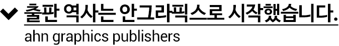
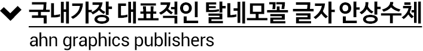
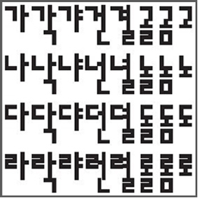
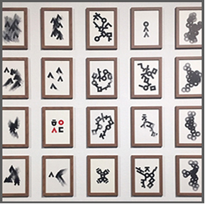

1985
1986
1988
1989
1993
1995
1999
2000
2001
2002
2004
2007
2011
2013



1985년, 그래픽 디자이너 안상수가 발표한 안상수체(혹은 안체)는 가장 대표적인 탈네모틀 글꼴이자, 가장유명한 한글꼴 중 하나다.안상수체의 가장 큰 특징은 초성, 중성, 받침의 모양과 크기가 어느 위치에 오든 모두 동일하다는 점이다.
예를 들어 맑은고딕체로 ‘각’을 쓰면 초성 ‘ㄱ’과 종성 ‘ㄱ’의 크기와 모양이 달라지지만, 안상수체에서는 그 모양과 크기가 모두 같다.
받침이 중성의 정중앙에 온다는 점, 그중 쌍받침은 아예 오른쪽으로비어져 나간다는 것 또한 극단적 형태미를 떠받쳐주는 요소다. 중요한 것은 이런 특징들이 안상수의 개인적 미감에 의한 것이 아닌, 한글의 창제 원리에 근거했다는 데에 있다.
2007년, 디자이너 안상수는 구텐베르크상을 수상했다. 이 수상의 한가운데에 안상수체가 있었음은 물론이다. 상을 받는 자리에서 그는 ‘글자사람’ 세종대왕과 ‘활자사람’ 구텐베르크, 그리고 현대 타이포그라피의 문을연 얀 치홀트를 거론했다.
세종대왕, 구텐베르크, 그리고 얀 치홀트. 안상수체는 이 세 명이 만나는 삼거리 교차로에 서 있다.